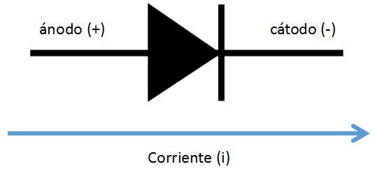
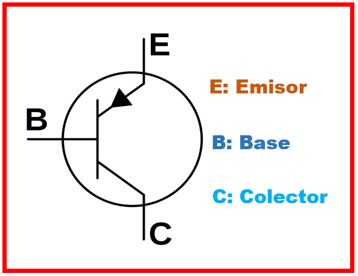
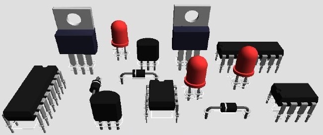
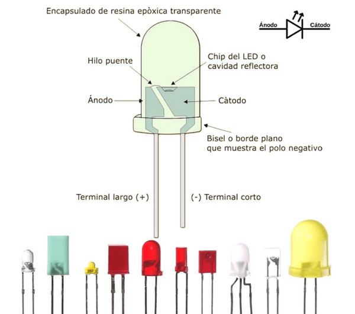
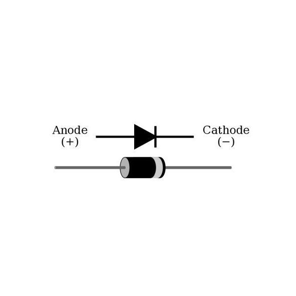
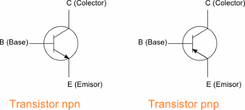

2.1 Dispositivos Activos.
Dispositivos Activos
Los compoenentes activos son aquellos que son capaces de controlar los parametros de los circuitos pero principalmente obteniendo ganancia a la salida de los mismos, los principales dispositivos son los diodos, transistores y los amplificadores operacionales o compuertas logicas.
Diodos
-Un diodo es un componente electronico de dos terminales que permite la circulacion de la corriente electrica a traves de el en un solo sentido, bloqueando el paso si la corriente circula en sentido contrario, no solo sirve para la circulacion de corriente electrica sino que este controla y resiste.
El simbolo del diodo en circuitos es el siguiente:

Transistores
-Un transistor es un dispositivo electronico semiconductor utilizado para entregar una señal de salida en respuesta a una señal de entrada. Cumple funciones de amplificador, oscilador, conmutador o rectificador. El termino "transistor" es la contraccion en ingles de transfer resistor a lo que quiere decir resistor de transferencia.
El simbolo del transistor en un circuito es el siguiente:

Amplificador Operacional
-Un amplificador operacional, a menudo conocido op-amp por sus siglas en inglés (operational amplifier) es un dispositivo amplificador electrónico de alta ganancia acoplado en corriente continua que tiene dos entradas y una salida. En esta configuración, la salida del dispositivo es, generalmente, de cientos de miles de veces mayor que la diferencia de potencial entre sus entradas.
El simbolo del amplificador en un circuito es el siguiente:
2.1.1 Materiales Semiconductores.
Los semiconductores pueden actuar como aislantes o bien como conductores (Interruptor), todo depende de algunos factores como la temperatura y la fuerza electromotriz aplicada.
Los semiconductores pueden ser intrinsecos o extrinsecos. Los semiconductores intrinsecos (que tambien se conocen como semiconductores extremadamente puros) son cristales que, a traves de enlaces covalentes entre los atomos, desarrollan una estructura de tipo tetraedrico a temperatura de ambiente, estos cristales tienen electrones que absorben la energia que necesitan para pasar a la banda de conduccion, quedando un hueco de electron en la banda de la valencia.
Los semiconductores son principalmente pertenecientes al grupo 4 de la tabla periodica, porque tienen 4 electrones en su ultima orbita por estar a la mitad, el octeto se puede convertir en aislates o conductores mediante un procedimiento de laboratorio llamado dopaje, los elementos de mayor uso para semiconductores son el silicio y el germanio.
Los semiconductores extrinsecos, por su parte, son semiconductores instrinsecos a los que les agregan impurezas para lograr un dopaje (asi se conoce el resultado del proceso que se lleva a cabo para modificar las propiedades electricas de un semiconductor
Tipo "P".
Se llama asi al material que tiene atomos de impuresas que permiten la formacion de huecos (de ahi que se denominen P o positivos) sin que aparezcan electrones asociados a los mismos, como ocurre al romperse una ligadura. Los atomos de este tipo se llaman aceptadores, ya que "aceptan" o toman un electron. Suelen ser de valencia tres (Grupo 3 de la tabla periodica), como el Aluminio, el Indio o el Galio. Nuevamente, el atomo introducido es neutro, por lo que no modificamos la neutralidad electrica de Cristal, pero debido a que solo tiene tres electrones en su capa de valencia, aparecera una ligadura rota, que tendera a tomar electrones de los atomos proximos, generando finalmente mas huecos que electrones, por lo que los primeros seran los portadores mayoritarios y los segundos los minotarios. Al igual que en el tipo N, la cantidad de portadores mayoritarios sera funcion directa de la cantidad de atomos de impurezas intriducidas.
Tipo "N".
Se llama material tipo N (o negativo) al que posee atomos de impurezas que permiten la aparicion de electrones (de ahi su deniminacion de negativo o N) sin huecos asociados a los mismos semiconductores. Los atomos de este tipo se llaman donantes ya que "donan" o entregan entregan electrones. Suelen ser valencia cinco (Grupo V de la tabla periodica), como el Arsenico y el Fosforo. De esta forma, no se ha desbalanceado la neutralidad electronica, ya que el atomo introducido al semiconductor es neutro, pero posee un electron no ligado, a diferencia de los atomos que conforman la estructura original, por lo que la energia necesaria para separarlo del atomo sera menorque la necesitaba para romper una ligadura en el cristal del Silicio (o del semiconductor original). Finalmente, exitiran mas electrones que huecos, por lo que los primeros seran los portadires mayoritarios y los ultimos los minotarios. La cantidad de portadores mayoritarios sera funcion directa de la cantidad de atomos de impurezas introducidos.
2.1.2 Dispositivos Semiconductores.
Un dispositivo semiconductor es un componente electronico que emplea las propiedades electronicas de los materiales semiconductores, principalmente del silicio, el germanio y el arsenico de galio, asi como de los semiconductores organicos. Los dispositivos semiconductores han reemplazado a los dispositivos termionicos (tubos de vacio) en la mayoria de las aplicaciones. Usan conduccion electronica en estado solido, como diferente del estado gaseoso o de la emision termoionicaen un gran vacio.

2.1.2.1 Diodos.
Uni diodo es un componenete electrico de dos terminales que permite la circulacion de la corriente electrica a traves de el en un solo sentido, bloqueando el paso si la corrente circula en sentido contrario, no solo sirve para la circulacion de corriente electrica si no que este la controla y resiste.
Diodo emisor de luz (LED).
Un diodo emisor de luz o led es una fuente de luz constituida por un material semiconductor dotado de dos terminales. Se trata de un diodo de union p-n, que emite luz cuando esta activado. Si se aplica una tension adecuada a las terminales, los electrones se recombinan con los huecos en la region de la union p-n del dispositivo, liberando energia en forma de fotones. Este efecto se denomina electroluminiscencia, y el color de la luz generada (que depende de la energia de los fotones emitidos) viene determinado por la anchura de la banda prohibida de semiconductor. Los leds son normalmente pequeños y se les asocian algunas componentes opticas para configurar un patron de radiacion.

Diodo Rectificador
Un diodo rectificar es util para pasar solo la mitad positiva o la mitad negativa de una señal de corriente alterna (CA), mediante el proceso de rectificacion. Comunmente los circuitos rectidicadores son utilizados en el diseli de fuentes de poder, donde la potencia de corriente alterna (CA) se debe transformar en potencia de corriente directa (CD) lo cual es muy util para circuitos electronicos y digitales.

Diodo Zener
El diodo zener es un diodo de silicio fuertemente dopado que se ha construido para que funcione en las zonas de rupturas, recibe ese nombre por su inventor CLarence Melvin Zener. El diodo Zener es la parte esencial de los reguladores de tension casi constantes con independencia de que se presenten grandes variaciones de la tension de red, de la resistencia de carga y temperatura.
Son mal llamados a veces diodos de avalancha, pues presentan comportamientos similares a estos, pero los mecanismos involucrados son diferentes. Ademas si el voltaje de la fuente es inferior a la del diodo este no puede hacer su regulacion caracteristica.

2.1.3 Transistores Bipolares
El transistor de union biporlar es un dispositivo electronico de estado solido consistente en dos uniones PN muy cercanas entre si, que permite aumentar la corriente y disminuir el voltaje, ademas de controlar el paso de la corriente a traves de sus terminales. La demoninacion de bipolar se debe a que la conduccion tiene lugar gracias al desplazamiento de portadores de dos polaridades (huecos positivos y electrones negativos), y son de gran utilidad en gran numero de aplicaciones; pero tienen ciertos inconvenientes, entre ellos su impedancia de entrada bastate baja.
Los transistores bipolares son los transistores mas conocidos y se usan generalmente en electronica analogica aunque tambien en algunas aplicaciones de electronica digital, como la tecnologia TTL o BiCMOS.
Un transistor de union bipolar esta formado por dos Uniones PN en un solo cristal semiconductor, separados por una region muy estrecha. De esta manera quedan formadas tres regiones:
- Emisor:
que se diferencia de las otras dos por estar fuertemente dopada, comportandose como un metal. Su nombre se debe a que esta terminal funciona como emisor de portadores de carga.- Base:
la intermedia, muy estrecha que separa el emisor del colector.- Colector:
de extension mucho mayor.
